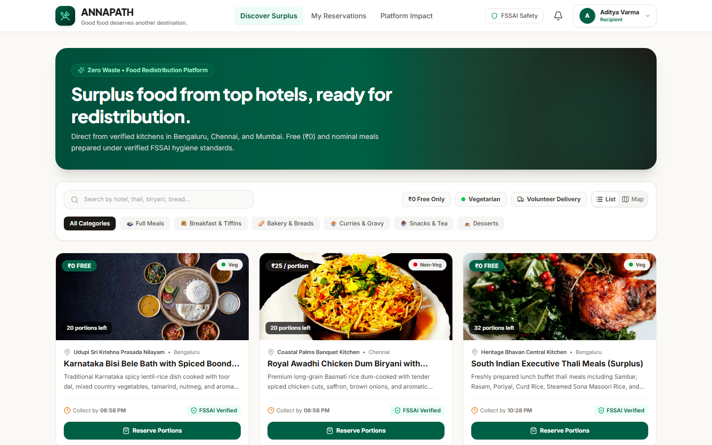

ANNAPATH
FOOD REDISTRIBUTION.
A multi-role surplus food redistribution network connecting commercial kitchens with recipients and community organizations — featuring cryptographic OTP handovers, FSSAI safety enforcement, and verified impact analytics.

CONNECTING SURPLUS HOTEL KITCHENS WITH URBAN COMMUNITIES.
Over 68 million tonnes of edible food is wasted in India annually while community food insecurity persists. ANNAPATH creates an accountable, transparent redistribution network verified by cryptographic OTP handovers.
Multi-Role Workspaces
Dedicated personas for Recipients, Hotel Owners, Hotel Staff, Volunteers, and Platform Administrators with instant 1-click persona switching.
Interactive Leaflet Discovery
Visual map and list views showing surplus batches with live portion counts, diet tags (Veg/Non-Veg), and Haversine distance.
Atomic Inventory Locking
High-concurrency transactions prevent double-booking or negative inventory allocations for limited community thalis.
Cryptographic OTP Handover
HMAC-SHA256 hashed OTPs verify direct counter pickups and volunteer doorstep deliveries with zero plaintext leakage.
FSSAI Food Safety Compliance
Mandatory hygiene suitability confirmations, temperature holding limits (hot holding >=60°C, chilled <=5°C), and safe collection windows.
Defensible ESG Impact Auditor
Calculates actual landfill waste avoided (kg) and greenhouse gas mitigation (CO2e) strictly from verified completed handovers.
HOW IT WORKS.
Modular monolith optimized for zero-config execution and fast automated testing.
Surplus Listing
Hotel kitchen logs batch portions, dietary tags & safe window.
Portion Locking
Recipient reserves meals; atomic DB lock prevents double-booking.
OTP Generation
Secure 6-digit collection OTP dispatched to recipient screen.
Counter Verification
Staff verifies hashed OTP before physical food handover.
Impact Accrual
Verified delivery increments landfill diversion & CO2e metrics.
APPLICATION SCREENSHOTS.
Live screens captured from the running application. Click any image to view full size, or follow setup instructions in the GitHub repository.
PLATFORM CAPABILITIES & VERIFIED SPECS.
Key modules, rules, safety checks, and automated test results documented in the repository.
| Subsystem | Technical Implementation | Verified Capability |
|---|---|---|
| Handover Security | HMAC-SHA256 hashed 6-digit OTPs | Zero unverified or false collection claims |
| Inventory Locking | SQLAlchemy atomic row-level locks | Zero negative or over-subscribed allocations |
| Spatial Geolocation | Leaflet GIS + Haversine distance | Sub-kilometer proximity kitchen discovery |
| Testing & Code Quality | Pytest suite across all API routes | 21 / 21 automated tests passed |
CORE TECHNOLOGIES.
Frameworks, databases, visualization tools, and testing libraries used in ANNAPATH.
FUTURE ENHANCEMENTS.
Upcoming improvements planned for ANNAPATH.
EXPLORE SOURCE & DOCS.
View the complete codebase, sample datasets, quick-launch scripts, and automated test suites on GitHub.